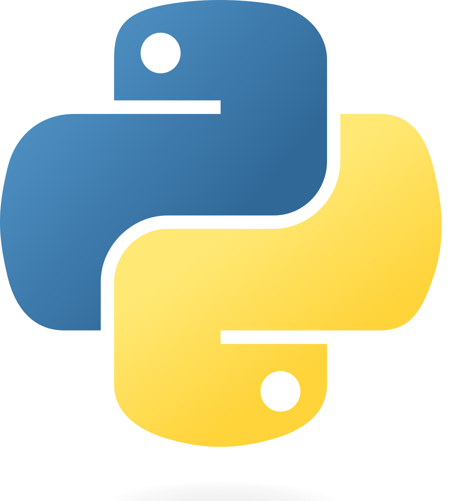
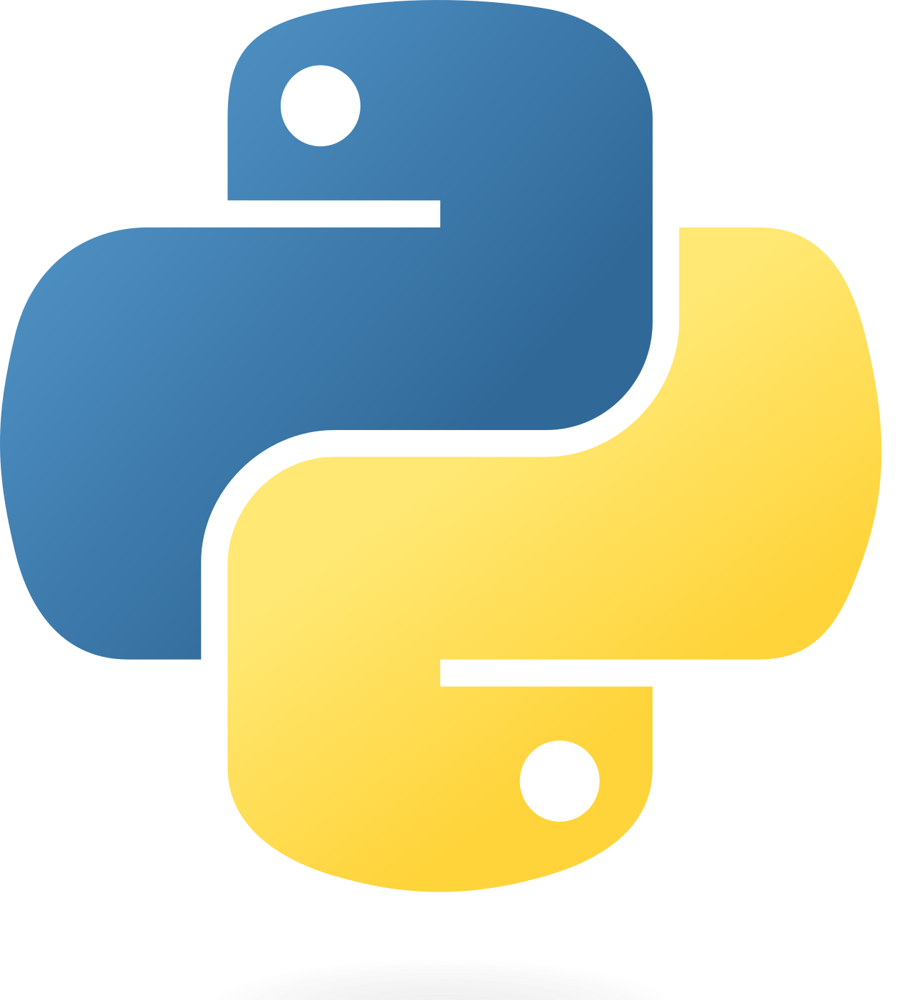

Leon Amadeus Varga
Contact
About Me
"I am a recent PhD graduate in computer science, with expertise in computer vision and robotics, specifically in hyperspectral imaging. My motivation lies in continual learning and the automation of processes. Seeking research positions to explore new challenges and push the boundaries of computer science."
Work Experience
June 2020 - September 2023
University of Tübingen - Chair Cognitive Systems, Tübingen, Germany as PhD student
- Research on computer vision for robotics and hyperspectral imaging (PyTorch).
- Designed and constructed hyperspectral laboratory systems.
- Prototyped a drone-embedded object detection pipeline using Nvidia Xavier.
- Established the maritime Search&Rescue benchmark SeaDronesSee.
- Scientific reviewer for conferences and journals (e.g., WACV, IEEE TIP, and IJCNN).
- Taught a lab course on mobile robots (ROS and C++).
- Technical lead for GPU computing systems, GitLab, and drone-related projects.
August 2018 - March 2020
LuxFlux GmbH, Reutlingen, Germany as Software Engineer (Student Trainee)
- Driver developement for hyperspectral and GigE cameras (C++/C)
- Prototyping on embedded platforms (Nvidia TX2)
October 2012 - September 2017
FNT GmbH, Ellwangen, Germany as Software Developer / Architect
- Full-stack developer with focus on front end (Flash, Java, SQL)
- Introducing a new technolgy stack (Typescript, Angular, JEE)
Publications
Hyperspectral Imaging
Unmanned Aerial Vehicles
Used technologies
 



 All trademarks and copyrights are property of their respective owners and are only mentioned for informative purposes.
All trademarks and copyrights are property of their respective owners and are only mentioned for informative purposes.
Education
June 2020 - September 2023
Ph.D. in Computer Science - University of Tübingen - Chair Cognitive Systems
Research topic: Computer Vision, Hyperspectral Imaging, Drones, Deep Learning
Research topic: Computer Vision, Hyperspectral Imaging, Drones, Deep Learning
October 2017 - April 2020
M.Sc. in Computer Science - University of Tübingen
Master Thesis: 'Measure ripeness of fruits by using hyperspectral cameras and deep neuronal networks'
Research Project: 'Introduce sparse information processing in a dense grid by using REPRISE'
Final grade: 1.3
Master Thesis: 'Measure ripeness of fruits by using hyperspectral cameras and deep neuronal networks'
Research Project: 'Introduce sparse information processing in a dense grid by using REPRISE'
Final grade: 1.3
October 2012 - September 2015
B.Eng. in Technical Computer Science - University of Cooperative Education (DHBW Heidenheim)
Bachelor Thesis: 'Development of a query language for the retrieval of service management data'
Research Project: 'Optimizing network topologies using genetic algorithms'
Final grade: 1.6
Bachelor Thesis: 'Development of a query language for the retrieval of service management data'
Research Project: 'Optimizing network topologies using genetic algorithms'
Final grade: 1.6
2003 - Juni 2012
Max-Planck-Gymnasium, Heidenheim
School club: Schüler-Ingenieur-Akademie (SIA) and participating in Jugend Forscht
Tutoring in mathematics
Final grade: good with prize in physics and computer science
School club: Schüler-Ingenieur-Akademie (SIA) and participating in Jugend Forscht
Tutoring in mathematics
Final grade: good with prize in physics and computer science
1999 - 2003
Heckentalschule, Heidenheim
Contact
LinkedIn: leon-varga-ai GitHub: leonvarga
E-Mail: leon(at)varga.host
You like this template? It is open-source! You can find it on my GitHub-page: https://github.com/leonvarga/business_card